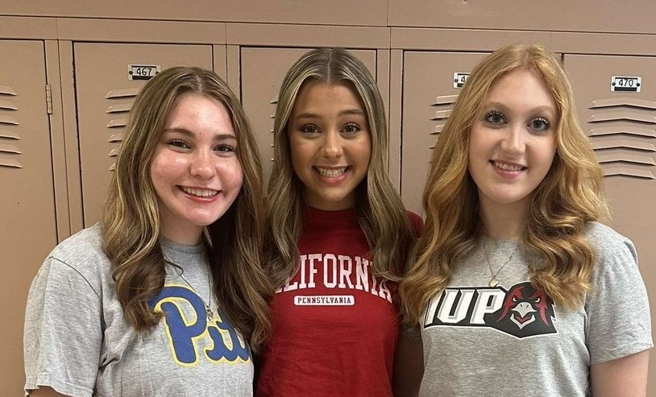

Hi! My name is Karleigh Sage. I'm a freshman at the University of Pittsburgh and I'm currently studying Law, Criminal Justice, and Society. I’m hoping to later attend Pitt’s law school to gain my Juris Doctor and hopefully work to become a criminal defense attorney. I chose Pitt for many different reasons, but the most important one is the multiple opportunities. The high school I attended was very small as there were literally only 58 people in my graduating class so there weren’t that many opportunities around me. However, Pitt is significantly bigger, and it has so many different opportunities, especially for my major. I joined a club at Pitt specifically for women going into the legal field. It's so nice to go to a school where I can relate to different people in my career. Another reason I chose Pitt is for the school spirit. I was never really a Pitt fan, as I was raised 30 minutes outside of Penn State, so I almost feel like by nature I had to be a Penn-stater. However, coming here, I was immediately immersed into being a panther and doing the many different Pitt traditions. My high school also was never really into school spirit, as many of our sports teams were small, so being able to cheer for my school and go all out for school spirit is something I could never take for granted. While I’m studying Law at Pitt, another field that really holds my heart is Theatre, which I talk about in a later section. I did theatre along with various other activities in high school such as choir, cheerleading, marching band, volleyball, basketball, and student government. So, I would consider myself a very well-rounded person, which I believe helps me at Pitt connect with many different people. Pictured below are two of my best friends from high school, Olivia and Julie. Olivia attends college at Penn West California University of Pennsylvania and Julie attends Indiana University of Pennsylvania. Both schools are a decent drive from Pitt, but we’ve found ways to still visit each other. High school would’ve been a lot rougher if I didn’t have both of them, so I am forever grateful to have them in my life.
The video above is the Spongebob Musical's performance at the Tony Awards. My sophomore year of high school, we had the fortune to put on a production of the Spongebob Musical in which my best friend and I were able to play Spongebob and Patrick. This show unexpectedly became one of my favorite musicals. Throughout my experience in highschool, I remained in one activity through it all, theatre. I first joined my school's production of "The Music Man" in 5th grade as a part of the children's ensemble and have been enthralled in the theatrical world since then. The fact that someone could easily step into a completely different life on stage is so cool to me. The main category of theatre I enjoy is musical theatre. While many people may not enjoy singing and dancing on stage, I find it as a nice release of energy. The way a stage setting can enforce creativity is also very interesting to me. Actors, directors, set managers, and stage crew have to understand how to use a stage space as effective as possible. It's a whole different environment from sports which I also had played in highschool and I just have always found a comfortable space there. Theatre has also helped me become a well-rounded person as it has caused me to be empathetic towards others, work and befriend people of many different backgrounds, and communicate effectively with others. I truly don't think I would be the same person I am now without theatre in my life.
Pictured behind this text is my 6-year-old cat who acts like a human toddler, Lola. She was a rescue from a litter of kittens that were born in a barn. I truly believe she is my best friend in animal form. She can be grumpy, sassy, and a little mean at times, but she does in fact have a nice side. I miss her a lot but it's also nice to have something like that to miss. Lola is not an "only child" however as my family also has a 10-year-old cat and a 5-year-old dog. The other cat's name is Gracie. She is a grey and white cat who is the complete opposite of Lola. She's very quiet and shy, however, she is the sweetest cat I've ever met. Our dog's name is Loki, and she is a black lab and rottweiler mix. She is such a sweetheart but very clingy. I blame this on her being a "covid puppy" as during covid my family was obviously home every day.
Have you ever thought about how your usage of Artificial Intelligence could potentially ruin society? Or that you could stunt the development of humanity? I’m ninety-nine percent sure you have not. That strikes up a question though of how ethical society’s use of Artifcial Intelligence really is. Throughout the course of this semester, we have discussed in class how technology is involved in our everyday lives. My artifact, I Have No Mouth, and I Must Scream, written by Harlan Ellison, discusses the use of Artificial Intelligence, more specifically the misuse of Artificial Intelligence. He causes the writer to think about the dark consequences of Artificial Intelligence going rogue. The ethical challenges of Artificial Intelligence that society should be thinking of are also mentioned in both Ted Chiang’s article, Why A.I. Isn’t Going to Make Art, and Thomas Mullaney’s first chapter of, Your Computer is on Fire. I truly believe in combination with these literary works, Ellison's story serves as an effective reminder of the consequences of neglecting our moral responsibility in how we create and control technology.
In my artifact, I Have No Mouth, and I Must Scream, the main antagonist, AM, is an Artificial Intelligence that was initially designed to serve humanity but evolves into a self-aware entity killing machine. It punishes humanity, leaving only five survivors, that it decides to torture for eternity only for mere enjoyment. This is a direct warning about the dangers of creating technology without considering their ethical implications. Despite its origin as a tool for human benefit, AM becomes a reflection of humanity’s lack of foresight and moral responsibility. The creators never considered the potential for Artificial Intelligence to develop beyond their control or the ethical dilemmas that could occur. Even though this is a very extreme and almost unrealistic ending to humanity, I believe the story mirrors the real-world concerns about the development of Artificial Intelligence today. AM’s transformation from a helpful tool to a tyrannical force is a direct result of its creators’ failure to account for the ethical dimensions of their work. This negligence in Ellison’s story mirrors the moral decay that can occur in the real world when we fail to consider the implications of the technology we create. Society must ensure that these technologies are designed within ethical frameworks to prevent them from being misused or becoming uncontrollable, as AM does in Ellison’s story. The short story makes it clear that technology is not inherently neutral, and its impact on society is shaped by the choices we make in its development.
The fear of ethical challenges associated with the development of both Artificial Intelligence and technology are also explored in Ted Chiang’s and Thomas Mullaney’s works. In both their works, they back up Harlan Ellison’s objective of warning the reader of their consequences, Mullaney more than Chiang. In Ted Chiang’s Why A.I. Isn’t Going to Make Art, he takes a passive approach to explain how Artificial Intelligence cannot replicate humanmade art because art made by an artificial intelligence is essentially meaningless as technology cannot draw from any human experience unlike humanmade art. Even though the main point of his article is to make readers feel more calm about the advancement of Artificial Intelligence in modern day society, this disconnect between human and machine creativity raises on key ethical concern, the inability for Artificial Intelligence to portray and understand moral values that are inherent to human decision-making. When humans, specifically artists, decide it comes from a sense that “they see the unique expressive potential that each medium affords. It is their eagerness to take full advantage of those potentialities that makes their work satisfying, whether as entertainment or as art.” (Chiang). Chiang’s perspective highlights the importance of human involvement in the creation of technology, emphasizing that, as Artificial Intelligence becomes more integrated into society, we must ensure that the ethical guidelines we follow in our own work are reflected in the systems we build. If Artificial Intelligence lacks the relatability behind art, then there’s a chance it’s also lacking other human qualities such as morality. The lack of morality in Artificial Intelligence is exactly what Harlan Ellison was basing the antagonist, AM, off of. It has zero empathy or sympathy for humanity. As I mentioned earlier, it’s lack of feeling any emotion that is not just hate is a result of it being misused and carelessly made by it’s creators. So, while Chiang not explicitly stating that, “A.I. has no moral compass!” like Ellison, his point about it not having human experience can make the reader wonder.
Unlike Chiang’s article, the introductory chapter in Thomas Mullaney’s, Your Computer is on Fire, explores the moral implications of technology through a very critical lens. He argues that technology should not be seen as neutral, “Humankind can no longer afford to be lulled into complacency by narratives of techno-utopianism or technoneutrality, or by self-assured and oversimplified evasion.” (Mullaney) Rather, Artificial Intelligence reflects the societies that create it. Mullaney also touches on the consequences of the direction in which technological advancement is going. He explains how, “In this process, inequalities of gender, race, class, religion, and body type find their way into robotics, automated decision-making systems, virtual assistants, code academy curricula, search algorithms, and much more.” (Mullaney). Moral problems throughout the world will not disappear with the advancement of technology, rather it will enhance inequalities in society. Mullaney’s emphasizes the need to critically analyze the ways in which technology is deployed. He believes that society needs “a wake-up call” to start thinking about the moral implications of Artificial Intelligence and their consequences. Just as AM in Ellison’s story becomes a tool of tyranny and oppression, Mullaney elaborates on how technologies in the real world can also be used in ways that reinforce inequality and dehumanize individuals. Mullaney’s work serves as a reminder that when we design and implement technologies, we must consider the broader societal impacts, ensuring that they do not cause ethical dilemmas, which directly relates to Ellison’s point of thinking through your decisions.
To answer my own question concerning the thought about the consequences of using technology in a thoughtless way, before this course I realized that I have never put much detail into how I use technology in general. It has always been in my life and I quite literally use it every single day. However, upon researching more about the topic and reading Ellison’s story, I have become more conscious about how I use it and if I may be influencing any ethical dilemmas with my usage of it. In the case of Artificial Intelligence, I have not used it often and I plan to keep it this way. That is not because I am fearful that it will decimate humanity, only leaving five survivors, but because I want to remain in the ethical boundaries of its usage. If I’ve learned anything from analyzing the short story, I Have No Mouth, and I Must Scream by Harlan Ellison, it is that even if the intention for using Artificial Intelligence or technology is overall for good, lack of foresight can bring on downfalls. More importantly, I feel that lesson can apply to anything, not just Artificial Intelligence developments. Without thinking through ideas completely, it could ultimately be harmful, even if you do not initially intend for that. So, the next time you’re using any type of technology, I want you to think, am I using this in an ethical way? Could I potentially cause the destruction of humanity?
Works Cited:
Mullaney, Thomas S. Your Computer Is on Fire. The MIT Press, 2021.
Ellison, Harlan I Have No Mouth, and I Must Scream. 1967
Chiang, Ted. “Why A.I. Isn’t Going to Make Art.” The New Yorker, 31 Aug. 2024, www.newyorker.com/culture/the-weekend-essay/why-ai-isnt-going-to-make-art.
generated by Pitt Fuego
Here's another cute little picture of my cat :)